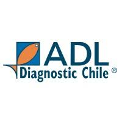

Vista SQL · vw_FVivaldiWebSalud · montos = UF × UF del día
Pre-factura y factura del caso. Si no hay número, se muestra “—”.
Filtros multi-selección. Vacío = todos. Serie desde 2020.
Venta $ (UF × UF día)
Evolución del filtro
Top programas del filtro
Top 15 empresas
Comparativo apilado
Empresas y programas por veterinario. Costo operativo = sección “Costo Operativo” (UF × UF del día).
Encuentra el día de muestreo del caso y muestra todo lo realizado ese día: veterinarios, sedes, empresas, centros y programas.
Puedes marcar varios veterinarios, sedes y programas.
Detalle filtrado del calendario
| Día | Veterinario | Sede | Empresa | Centro | Programa | N | Venta $ | Costo operativo $ |
|---|
Elige año, mes y programa. Días = fechas de muestreo distintas. Costo operativo en UF (sección Costo Operativo).
Puedes marcar varios años, meses y programas. Vacío = todos. También respeta veterinario, cliente y sede de arriba.
| Empresa | Sede | Días | Costo operativo UF |
|---|
Fuente: vista SQL dbo.vw_FVivaldiWebSalud (solo lectura). Montos en pesos = UF × valor UF del día (fac_vtatotal × fac_uf).
fecha_muestreo), no por fecha de recepción ni de factura.fac_vtatotal, sin multiplicar por el valor UF del día).fecha_muestreo (formato día/mes/año de la vista).nombre_veterinario (se puede ocultar “No aplica” / “Cliente”).nombre_lugaranalisis (Puerto Montt / Aysén / Villarrica).nombre_empresaservicios (no nombre_empresa).nombre_centro.nombre_programa.caso_adlab. Cada caso tiene un día de muestreo. Al encontrarlo se lista todo lo realizado ese día (sin recortar por veterinario, cliente, sede ni programa). La fila resaltada es la combinación del caso. Acepta el código completo (PM-170523) o solo el número.